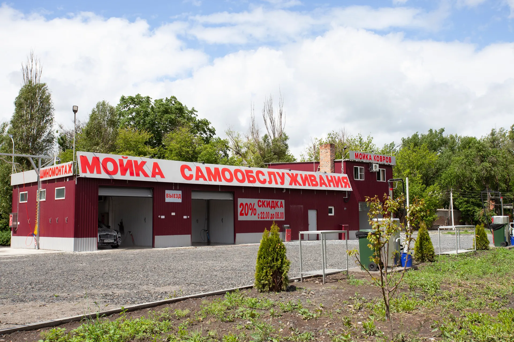
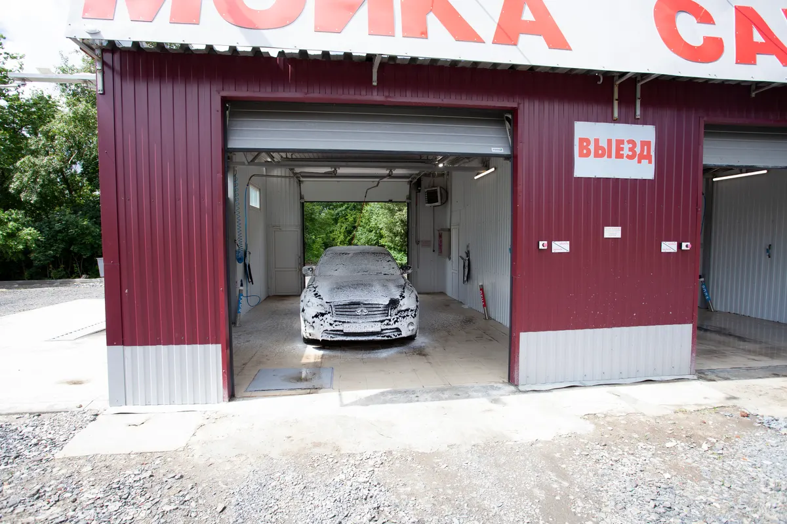
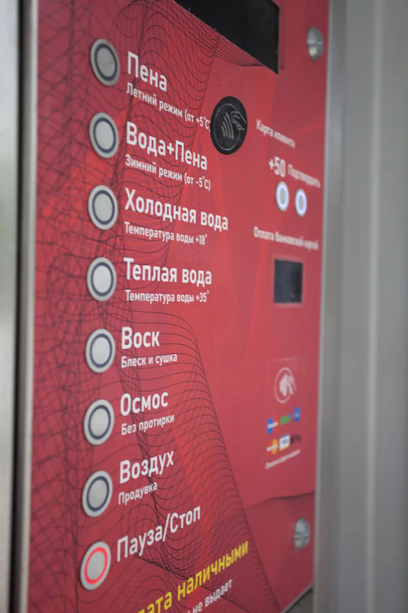
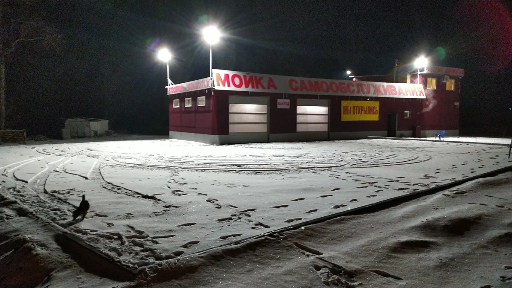

Мойка самообслуживания · круглосуточно
Мойка самообслуживания в Новошахтинске: закрытые боксы круглосуточно
Пена, воск, осмос и тёплая вода. Ворота в боксе закрываются: зимой не мёрзнете, летом не летит пыль.
- Круглосуточно, без записи
- Ворота закрываются - ветер и пыль снаружи
- Платить можно наличными, карту уточняйте

Режимы мойки
Режимы - с пульта оплаты на мойке. Сколько стоит минута каждого, владелец ещё не передал: на карточке Яндекс.Карт указано «100 ₽», но данные давно не обновлялись.
Вода и пена
- Пенауточнить
- Вода + пенауточнить
- Холодная водауточнить
- Тёплая водауточнить
Завершающие режимы
- Воскуточнить
- Осмосвода без разводовуточнить
- Воздухуточнить
- Пауза / стопна том же пультеуточнить
Цены и порядок оплаты уточняйте по телефону. Скидка 20% с 22:00 до 06:00 - по табличке на здании.
Как помыться
- 01
Найдите площадку
Рабоче-Крестьянская ул., 1Г. Площадка чуть в стороне от дороги - откройте маршрут на Картах.
- 02
Заезжайте в бокс
Заехали, закрыли ворота - ветер, пыль и брызги остаются снаружи.
- 03
Выберите режим на пульте
Пена, вода с пеной, холодная и тёплая вода, воск, осмос, воздух.
- 04
Оплатите и мойте
Аппарат принимает наличные. Нужна карта или размен - спросите по телефону.



Что есть на мойке
Закрытые боксы с воротами
Отзыв на Картах: «единственная в городе с изолированных боксами». Зимой теплее, летом меньше пыли.
Круглосуточно, без записи
По карточке на Яндекс.Картах мойка работает круглосуточно. Записываться не нужно - приезжайте, когда удобно.
Ночью дешевле
На здании табличка «20% скидка с 22.00 до 06.00». Действует ли она сейчас, уточняйте по телефону.
Место для высокой техники
По отзыву на Картах есть отдельное место без ограничения по высоте для габаритного транспорта. Размеры уточняйте по телефону.
Отзывы с Яндекс.Карт
«Отличная мойка, единственная в городе с изолированных боксами. Летом не летит пыль, зимой достаточно тепло»
Geras Alex · 28 августа 2024
«Цена норм. А зимой вообще лучше не придумаешь, заехал закрыл и мойся как тебе надо. 👍хорошая задумка и реализовано с умом.»
Николай Лаврухин · 2 января 2023
«Отличная мойка, особенно зимой и когда ветер. Изолированные боксы.»
Евгений Онянов · 20 октября 2021
Отзывы с карточки на Яндекс.Картах, без правок.
Частые вопросы
Нужно ли записываться?
Нет. Запись не нужна, мойка работает круглосуточно: заезжайте в свободный бокс.
Сколько это стоит?
Оплата идёт за режимы мойки. Точные суммы владелец ещё не передал - назовём по телефону. На карточке Яндекс.Карт указано «100 ₽».
Чем можно платить?
Аппарат принимает наличные. По отзывам, карта работает не во всех боксах, поэтому перед приездом лучше уточнить по телефону.
Можно ли мыть большую машину, ковры, радиатор?
По отзывам на Картах - да: люди моют ковры, радиаторы, мотоциклы, а для габаритного транспорта есть место без ограничения по высоте. Габариты уточняйте по телефону.
Как найти мойку?
Рабоче-Крестьянская ул., 1Г. Площадка немного в стороне от дороги, подъезд не асфальтирован - откройте маршрут на Яндекс.Картах.
Приезжайте в любое время - мойка круглосуточно
- Адрес
- Рабоче-Крестьянская ул., 1Г, Новошахтинск
- Часы
- Круглосуточно
- Телефон
- +7 (908) 507-91-99